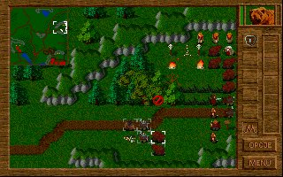
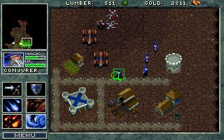

|
"Popatrz, Warcraft po polsku" - to zdanie było najczęściej wypowiadanym przez graczy zwiedzających stoisko firmy User podczas targów PlayBox w 1996 roku, na których to miała swoją premierę pierwsza część serii Polanie. Właściwie ten pierwszy klasyczny polski rts już od początku zakodował się w głowach rodzimej braci grających właśnie jako "polski Warcraft". Dlatego też zdecydowałem się napisać ten artykuł porównujący te dwie podobne, a jednak różne od siebie, gry. Jeszcze do niedawna seria Warcraft kojarzyła mi się tylko i wyłącznie z drugą jej częścią. Powód był iście banalny: po prostu nigdy nie udało mi się wejść w posiadanie jej poprzedniczki. Zdążyłem sobie jednak wypracować, na podstawie materiałów z internetu i prasy, opinię na jej temat. Uważałem ją za bardzo przeciętny tytuł, niedorastający do pięt jej Westwood'owego odpowiednika, czyli Dune II : Battle for Arrakis. Słowa pochwały wobec Warcrafta traktowałem z lekkim przymrużeniem oka, ponieważ uważałem, że to raczej przez wzgląd na drugą część tej serii, a nie rzeczywistą jakość Warcrafta, są one wypowiadane. Pewnego jednak razu wpadłem na pomysł, żeby mimo wszystko spróbować zagrać w Warcrafta I i samemu wyrobić sobie opinię na jej temat. Kilka minut później 5-megowy plik ściągał się z serwisu poświęconego klasyce gier komputerowych. Rozpakowałem go i... stało się! Ale wszystko po kolei. Przy pierwszym uruchomieniu gry od razu miałem skojarzenie z Warcraft II. Identycznie wyglądające budynki, kopalnie, praktycznie te same jednostki, muzyka też jakby znajoma. Właściwie to dobrze. Przystąpiłem zatem do rozgrywania pierwszej misji. Od tego momentu minął niecały miesiąc. Teraz kończę już drugą kampanię (orkami) i mogę powiedzieć tylko jedno: ta gra to istne cudo. Należy, wg mnie, do grona klasyki przez duże "K". Jest jedną z tych gier, których się nie zapomina i nie zapomni jeszcze przez dłuższy czas. Ale, ale... Ten tekst miał porównywać Warcrafta z Polanami, a ja na razie o tym ani słowa.  Tytuły te wydane zostały w rocznym odstępie czasowym (Warcraft - I kwartał '95, Polanie - I kwartał '96), mimo to pod względem technicznym prezentują się identycznie. Grafika w obydwu przypadkach to najzwyklejsze VGA, czyli 256 kolorów w rozdzielczości 320x200. Przy takich możliwościach sprzętowych o jakości grafiki decyduje jej artyzm lub, jak kto woli, umiejętność wmówienia graczowi, że ta kupa poruszających się pikselów to jego niezwyciężony heros, z którym powinien się identyfikować. I pod tym względem obie gry spisują się bardzo dobrze. Pewną przewagę ma tutaj Warcraft. Nie wiem czy się ze mną zgodzicie, ale mnie osobiście grafika wydaje się w tym tutule nieco lepsza. Autorzy użyli palety ciemniejszych, intensywniejszych kolorów, nadając grze odrobinę mroczniejszy klimat. Obserwując poszczególne elementy stworzonych światów odnoszę wrażenie, że zespół Blizzarda w większym stopniu dopieścił swój produkt. Widoczne jest to w przypadku postaci, efektów rzucanych czarów, środowiska gry, a także wyglądu samego interfejsu. Znacznie bardziej wyrównany poziom prezentują te gry, jeżeli chodzi o oprawę dźwiękową. Tak naprawdę wybór lepszego pod tym względem tytułu jest sprawą indywidualną i decyduje tutaj kwestia gustu. Bowiem zarówno w Polanach jak i w Warcrafcie odgłosy płynące z komputerowych głośniczków w sposób idealny budują klimaty tych gier. Oprawa audio-wizualna... jaka jest - każdy widzi i słyszy. Jednemu może się podobać, drugiemu ani trochę i każdy może mieć własne zdanie. Są jednak kryteria, według których gusta mają o wiele mniej dopowiedzenia niż fakty. Zacznijmy od podstawowych założeń Polan i Warcrafta: POLANIE - możemy zagrać tylko jednym plemieniem - Polanami - walcząc przeciwko jednemu z czterech pozostałych plemion. Podczas rozgrywki możemy wybrać cel następnego ataku, niestety dokonane przez nas wybory oraz odniesione sukcesy, bądź ich brak, nie mają żadnego wpływu na dalszy przebieg gry. Rozgrywka opiera się na jednym surowcu, którym jest mleko. WARCRAFT - mamy do wyboru dwie rasy: Ludzi i Orków, a dla każdej z nich jedną kampanię. Grając poszczególnymi stronami możemy sterować różniącymi się od siebie jednostkami, zmusza to nas do stosowania różnych taktyk. Dokonam teraz porównania tych dwóch gier pod kilkoma względami: POSTACIE P: 10 rodzajów, z tym że normalnie możemy stworzyć osiem z nich (bez strzygi i niedźwiedzia, ale tego ostatniego możemy otrzymać w Miejscu Przemiany). W misjach specjalnych mamy imiennych bohaterów, w całej grze jest ich sześciu (Helwig Wiking, Enryk Bald, Marla Mocna, Dvarhk Oldrin, Widora, Krowa). Niestety poza nazwą nie odróżniają się one niczym więcej od swych bezimiennych odpowiedników. Niektóre postacie mogą używać czarów, jest ich 4 plus dwie umiejętności specjalne, do których należy zaliczyć "regenerację" strzygi oraz "doświadczenie" rycerza. W skład wioski mogą wchodzić budynki w sześciu różnych rodzajach. W: po 9 rodzajów na każdą z ras, ale niektóre się powtarzają, dodatkowo podczas wykonywania niektórych zadań natkniemy się na 4 typy jednostek, których nie może stworzyć żadna ze stron. W misjach specjalnych, podobnie jak w Polanach, mamy 4 bohaterów obdarzonych imionami (Garona, Griselda, Sir Anduin Lothar, Medivh the Warlock). Tutaj jednak autorzy posunęli się nieco dalej i obdarzyli je nowym wyglądem oraz unikalnymi właściwościami (na przykład Medivh the Warlock może dalej i szybciej rzucać fireballe). Każda z ras posiada dwie jednostki dysponujące czarami, których w sumie różnych jest jedenaście (po 6 na stronę, z tym, że jeden się powtarza). Budynków możemy wybudować aż 8, jednak mimo różnych nazw i wyglądu u poszczególnych ras mają one analogiczne funkcje. KAMPANIE P: tylko jedna, składająca się za to aż z 25 misji. Naszym celem jest zrewanżowanie się za krzywdy, jakie wyrządziły nam sąsiednie plemiona. Jest ich cztery: Mazowszanie, Pomorzanie, Wieleci i Wiślanie. Niestety, ale, poza odmiennymi barwami ubiorów, nie różnią się one między sobą w żaden sposób. Po wykonaniu każdego zadania ukazuje nam się specjalna mapa z możliwością wyboru obszaru, na którym będzie toczyć się dalsza rozgrywka. Taka możliwość nie zmienia jednak faktu, że gra jest liniowa i wyniki poszczególnych wypraw nie mają żadnego wpływu na warunki wykonywania innych. W: zarówno Orkami, jak i Ludźmi możemy rozegrać jedną, 12-etapową kampanię. Końcowym celem w każdej z nich jest zniszczenie wrogiej rasy i uzyskanie władzy. Misje ułożone są w niezmiennej kolejności. MISJE W poszczególnych misjach będziemy musieli wykonywać różne zadanie. Mogą one polegać na: - rozbudowie własnej wioski i zniszczeniu wroga, [WP] - zniszczeniu wszystkich przeciwników, z tym że sami określoną liczbę wojów, bez możliwości tworzenia nowych, [WP] - odbiciu zaprzyjaźnionej postaci i eskortowaniu jej w bezpieczne miejsce, [WP] - doprowadzeniu jakiejś ważnej postaci do Magicznego Kręgu, [P] - penetrowaniu podziemnych jaskiń w różnych celach, [W] - walczeniu przeciwko tej samej rasie, jeżeli wyniknie to z fabuły, [W] - zgładzeniu wrogiego bohatera. [W] Na tym polu dość wyraźną przewagę ma Warcraft. Dzięki większemu urozmaiceniu wykonywanych zadań, gracz nie odczuwa znudzenia. Bardzo duże znaczenie ma także fakt, że w przypadku gry Blizzarda właściwie każda misja zaskakuje nas czymś nowym: nową jednostką, nowym budynkiem, nietypowym zadaniem czy zróźnicowaną scenerią (bagna, podziemia). W Polanach zaś mamy tylko dwa "poziomy technologiczne". W najlepszym przypadku już w okolicach szóstej misji widzieliśmy właściwie wszystko, co gra ma nam do zaoferowania. To stanowczo za wcześnie! INTERFEJS To chyba jedyny element, o którym możemy powiedzieć, że jest bezapelacyjnie lepszy u Polan. Możliwość grupowania jednostek oraz "inteligentne kursory" znakomicie ułatwiające grę. No, ale w końcu programiści z Krakowa byli mądrzejsi o cały rok, który dał nam przecież boskie Command & Conquer: Tiberian Dawn. Chociaż patrząc na to z drugiej strony, można powiedzieć, że do sterowania w Warcrafcie można się łatwo i szybko przyzwyczaić - później już o tym nie myślimy. MULTIPLAYER  W tej kwestii sprawa jest banalnie prosta: w Warcrafcie tryb multiplayer mamy, w Polanach nie! I to jest właściwie największy minus tej gry. Programiści z Blizzarda byli pierwszymi, którzy umożliwili graczom zmierzenie się z żywym przeciwnikiem. Można przez to zrobić za pośrednictwem modemu, sieci lokalnej lub kabla szeregowego (z wyjściem na COM). Do tego trybu stworzone zostało kilkanaście map. W każdej partii mamy możliwość ustalenia zasobów posiadanych na początku gry oraz rasy, jaką będziemy grali. Wielka szkoda, że twórcy Polan nie poradzili sobie z problemem zaimplementowania tego trybu w swojej grze. Unikalne rozwiązania zastosowane w tej grze, dotyczące dostępności surowca oraz sposobu jego pozyskiwania, z pewnością wymusiłyby na graczach opracowanie nowych sposobów na rozgrywanie batalii. A tak, szkoda... Pora na podsumowanie przedstawionych powyżej informacji i udzielenie odpowiedzi na pytanie: która gra jest lepsza? Starając się być obiektywnym jestem zmuszony wręczyć wieniec laurowy... Warcraftowi. Zgodzą się ze mną Ci z Was, którzy mieli doczynienia z obydwiema tymi grami. Nasz zwycięzca jest produktem oferującym potencjalnym graczom znacznie więcej niż jego konkurent. Możnaby się oczywiście spierać o dźwięk czy klimat gry. To już jest jednak kwestią gustu. Prawdopodobnie większości z polskich graczy bardziej spodobał się słowiański nastrój i humor wypełniający Polan po brzegi. Ten element z pewnością był kluczowym w drodze Polan do sukcesu w Polsce, ale to Warcraft jest górą. Tak czy siak każda z nich warta jest czasu jaki im poświęciłem i zalecam do spróbowania. Taka jest moja opinia. Jeżeli macie odmienną opinię na ten temat, lub taką samą: wyraźcie ją na forum. |